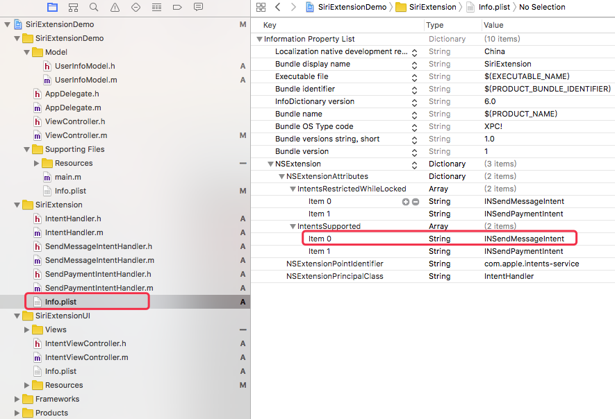
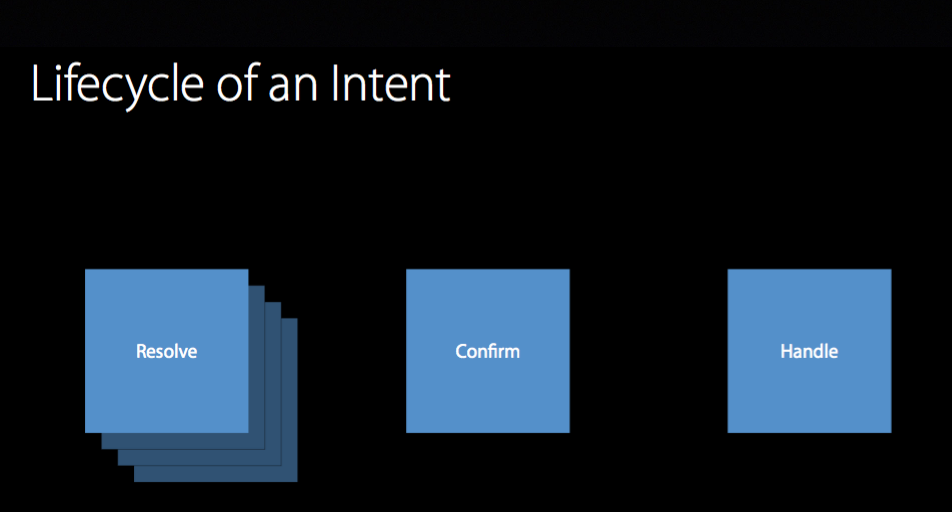
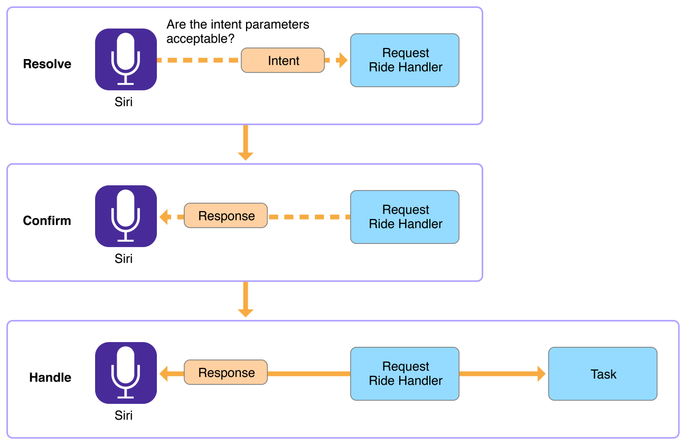
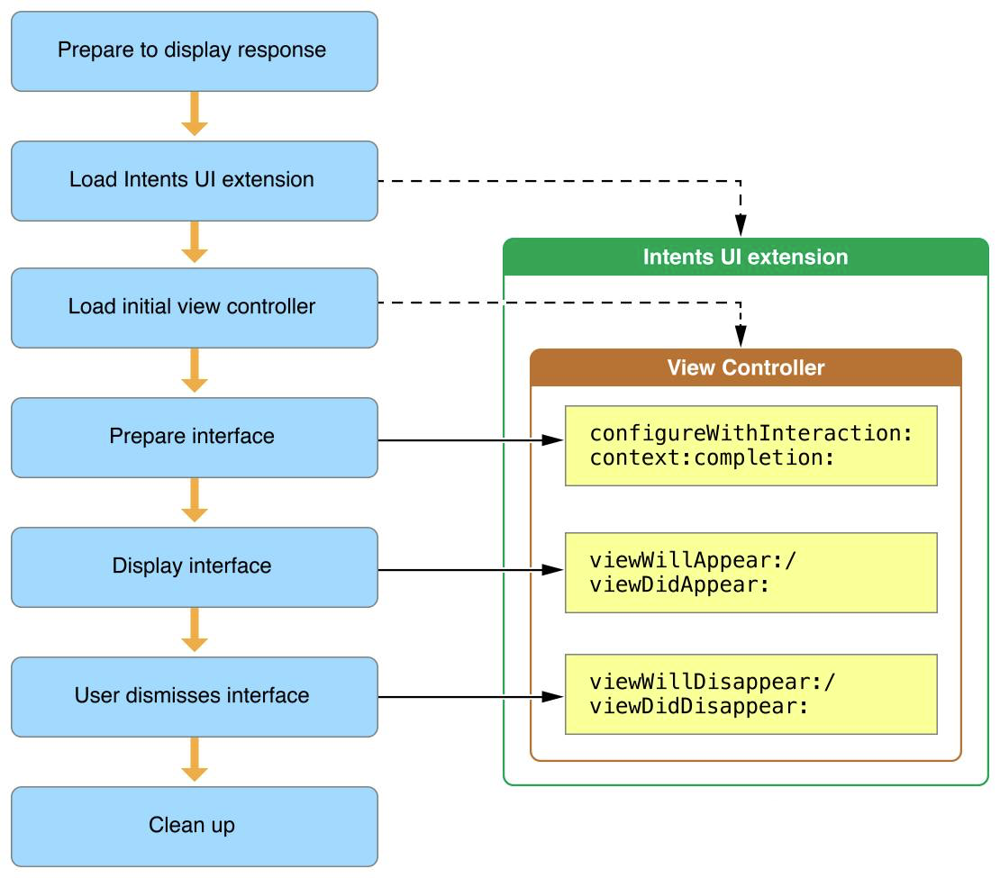
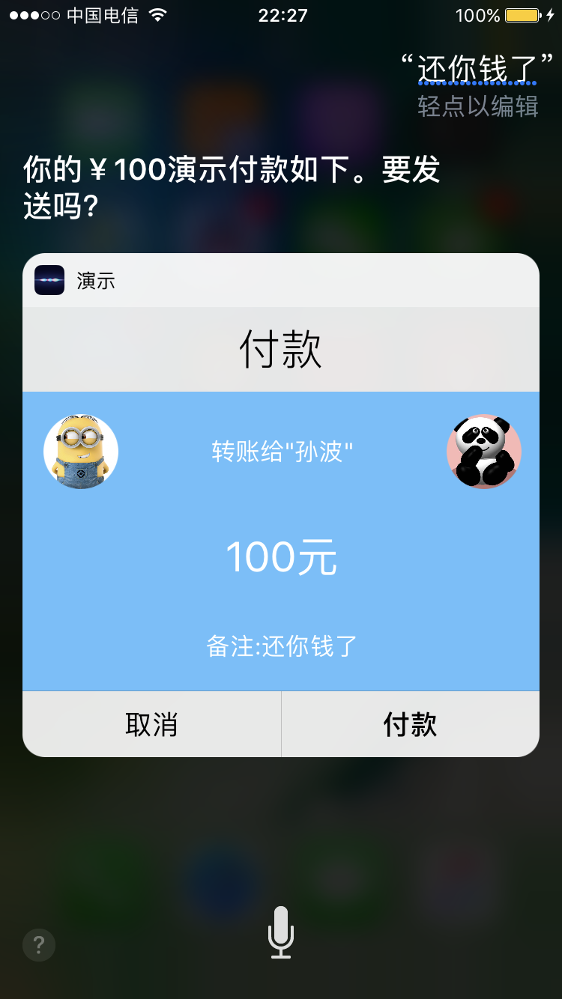

一、SiriKit介绍
Siri是一款苹果 iOS 系统提供的智能语音助手软件，它的全名是 Speech Interpretation and Recognition Interface。2011年 Siri第一次以 iOS 内置软件的形式随 iPhone 4s 一同问世之后，终于在 WWDC 2016 上，苹果开放了Siri 的 API，开发者们可以利用SiriKit将自己的服务提供给用户。
备注：SiriKit是系统调用，是一个语义处理结合扩展UI的框架，不是语音转文字的框架。
1、SiriKit提供11类服务领域，详情请见苹果官方文档
| SiriKit 服务领域（Domain） | 对应的意图(Intent) |
|---|---|
| 语音和视频通话 (VoIP calling) | INSearchCallHistoryIntent、INStartAudioCallIntent、INStartVideoCallIntent |
| 发送消息 (Messaging) | INSendMessageIntent |
| 收款或者付款 (Payments) | INSendPaymentIntent、INRequestPaymentIntent |
| 列表和笔记 (Lists and Notes) | INCreateNoteIntent、INAppendToNoteIntent |
| 视觉编码 (Visual Codes) | INGetVisualCodeIntent |
| 图片搜索 (Photo search) | INSearchForPhotosIntent |
| 管理锻炼 (Workouts) | INEndWorkoutIntent、INPauseWorkoutIntent 、INStartWorkoutIntent 、 INResumeWorkoutIntent 、INCancelWorkoutIntent |
| 行程预约 (Ride booking) | INRequestRideIntent、INGetRideStatusIntent、 INListRideOptionsIntent、 INGetRideStatusIntent |
| 车载管理 (Car Commands) | INGetCarLockStatusIntent、INSetCarLockStatusIntent、INActivateCarSignalIntent |
| 车载系统 (CarPlay) | INSetAudioSourceInCarIntent、 INSetClimateSettingsInCarIntent、 INSetSeatSettingsInCarIntent、INSaveProfileInCarIntent、INSetProfileInCarIntent、INSetRadioStationIntent |
| 餐厅订位 (Restaurant Reservations) | INBookRestaurantReservationIntent、 INGetAvailableRestaurantReservationBookingDefaultsIntent、 INGetAvailableRestaurantReservationBookingsIntent、 INGetRestaurantGuestIntent、 INGetUserCurrentRestaurantReservationBookingsIntent |
简单来说，在SiriKit的开发功能基本上就是在苹果提供的这些领域(Domain)上，在App开发中需要开发哪种领域的功能，就要在对应的plist文件中添加对应的Intent支持（具体在哪个plist文件下文有说明）那什么是Intent？
备注：SiriKit不是万能的，语义的处理流程要按照苹果的套路来（应用领域，意图），界面UI也套路来，不能调用App内部页面，具体UI会有SiriKit的UI扩展来实现。
2、Intent的说明
要想了解Intent，首先要清楚SiriKit的外部工作流程：
1)、 Siri完成语音识别和语义分析；
2)、会根据你词汇中的关键词识别出你属于上述11种领域中的哪一种；
3)、然后将结构化语音分析结果打包成一个某个领域（Domain）的意图(Intent)；
4)、接着交给支持这个意图（Intent）的第三方应
用，第三方应用被启动，从 传入的Intent中获取相应的信息，完成操作。
整个宏观的流程如下图：
例如，上图演示中提到了的例句 “用苏宁发消息给小明”，
领域 （Domain）：Messaging
意图 （Intent）：Send a message （INSendMessageIntent）
意图参数 （Intent Parameter）
收件人（recipients）：小明
消息内容（content）：空
备注：（如果没有消息内容，这时就会涉及到Sikit的API中提供的处理机制，这个机制会调Siri反问你要发送什么内容，这个就涉及到下文提到的SiriKit相关功能和处理流程，会有不同的扩展和类在处理这个问题）
二、SiriKit功能开发介绍
1、发消息意图API（举例）
1）、发消息INSendMessageIntent配置
涉及到SiriKit的基本项目文件：

2）、发消息INSendMessageIntent相关协议方法
一个标准的意图语音被Siri识别之后，SiriKit会先进入一个继承于INExtension的指定意图流程入口(NSExtensionPrincipalClass)类IntentHandler.m(默认类)。下面在这个相关类会处理整个流程：

| 方法列表 | 中文解释 |
|---|---|
| -resolveRecipientsForSendMessage:withCompletion: | 解析发送消息语义，提取意图对象 |
| - resolveContentForSendMessage:withCompletion: | 解析发送消息内容方法 |
| - confirmSendMessage:completion: | 确认方法 |
| - handleSendMessage:completion: |
处理方法 |
意图的生命周期如下图文描述：
一个典型的Intent事件的处理过程中有这三个步骤Resolve、Confirm和Handle
Resolve阶段。在Siri获取到用户的语音输入之后，生成一个INIntent对象，将语音中的关键信息提取出来并且填充对应的属性。这个对象在稍后会传递给我们设置好的INExtension子类对象进行处理，根据子类遵循的不同协议来选择不同的解决方案。
Confirm阶段。在上一个阶段通过handlerForIntent:(INIntent *)返回了处理Intent的对象，此阶段会依次调用confirm打头的实例方法来判断Siri填充的信息是否完成。匹配的判断结果包括Exactly one match、Two or more matches以及No match三种情况。这个过程中可以让Siri向用户征求更具体的参数信息。
Handle阶段。在confirm方法执行完成之后，Siri进行最后的处理阶段，生成答复对象，并且向此Intent对象确认处理结果然后执显示结果给用户看。

3）、发消息INSendMessageIntent的意图对象
具体在各个阶段的方法里怎么代码实现，主要是要理解INSendMessageIntent的对象属性，通过解析对象，可以在各个阶段用获取到的对象进行相关程序逻辑编码。如：
| 对象名称 | 类型 | 备注 |
|---|---|---|
recipients |
NSArray<INPerson*> |
Contacts to whom the message should be sent. |
content |
NSString |
Body text of the message. |
groupName |
NSString |
Body text of the message. |
serviceName |
NSString |
Specified service for the message. |
sender |
INPerson |
The person, or account, sending the message. |
通过流程方法里获取到INSendMessageIntent对象进行解析，匹配，处理，这个过程还涉及到返回的处理。每一个解析方法都需要得到一个INIntentResolutionResult类型的实例，用来保存校验结果。
INIntentResolutionResult及其子类有不同的构造方法生成不同类型的结果，用来指定和Siri的交互。
值类型 INIntentResolutionResult |
说明 |
|---|---|
+ (instancetype)needsValue; |
需要一个值，Siri会提示用户给一个值 |
+ (instancetype)notRequired; |
不是必要的，是否给值都会过这个resolve |
+ (instancetype)unsupported; |
不支持的，Siri会提示用户这个值不被支持 |
+(instancetype)successWithResolvedValue:(BOOL)resolvedValue; |
成功解析 |
+(instancetype)confirmationRequiredWithValueToConfirm:(nullable NSNumber *)valueToConfirm; |
Siri提示用户确认当前是否是一个bool值 |
当一个intent的所有参数都成功解析了，处理程序就会向用户询问是否确认这个intent的细节，并且提供一个建议响应。当所有参数被成功解析后，或者在不要求所有参数进行解析，那么就认为是解析成功。
在确认期间，就可以执行所有的intent参数的附加验证，以确保你可以使用该信息来执行所请求的服务。如果之前的解析函数是单元测试，那么这个确认函数就是集成测试，保证所有输入参数正确。
最后一个处理intent的阶段，就是执行与这个intent相关的动作。在-handleSendPayment:completion函数中做相应业务逻辑，需要注意的是你在Extension中做的修改也应当反应到App主程序当中，所以需要提供任务的数据给到App。SiriKit提供了一个包含intent细节（INIntent、INIntentResponse）的InInteraction对象，你可以使用userActivityInstance.interaction得到它，在App启动时调用- (BOOL)application:(UIApplication *)application continueUserActivity:(NSUserActivity *)userActivity restorationHandler:(void (^)(NSArray *restorableObjects))restorationHandler
函数处理来自Extension的数据。
4）、根据流程方法处理之后，如何与主程序通信
轻量级通信可采用这个办法：
1）、在handling阶段在NSUserActivity存储相应的信息，字典或字符串都行（如上handling阶段代码）。
2）、在AppDelegate，获取NSUserActivity所存储的信息。
3）、发送通知给所需要的地方。
4）、接收到通知后对主程序进行相应操作。
备注：确认消息发送之后的逻辑也可以在处理阶段编码解决
有关在AppDelegate中处理SiriKit的Intent可以参考相关苹果官方文档
|
|
2、自定义界面(Intent UI Extension)
运用SiriKit开发相关功能，UI是依赖于Intent UI Extension，SiriKit并不能从系统层面调用App内部UI，只能调用打开App和SirKit自定义UI。
系统创建了ViewController，加载视图，调用viewDidLoad方法并且调用了INUIHostedViewControlling协议的configureWithInteraction:context:completion:方法，传递了一个交互对象，用于配置界面。 当配置完成后，ViewController就会展示在Siri或者Maps应用界面的空白部分。这时会调用viewWillAppear/viewDidAppear方法。
当视图消失时，也会调用生命周期的viewWillDisappear/viewDidDisappear方法。

关于控制器的使用，苹果给出了几点注意事项：
- 切换子控制器来展示不同类型的内容。 你的Intents UI扩展只有一个主视图控制器，如果你想为不同的Intents展示不同的内容，你需要使用不同的视图。可以在
configureWithInteraction:context:completion:这个方法里面，根据提供的intentObject来创建不同的子视图。
- 在你的视图控制器可用的期间，动态调整内容。 在
viewDidAppear:方法里面才开始启动动画，在viewWillDisappear: 方法里面要结束动画。
- 尽快的配置好你的视图控制器，这样
Siri才能更快的展示它。 你的视图控制器也许不会在屏幕上停留太久，所以尽量利用本地资源以及提供的INInteraction对象来配置你的设置。如果你需要从服务器拉取更多的信息，请异步完成，并在稍后再更新你的界面。
转账例子：
